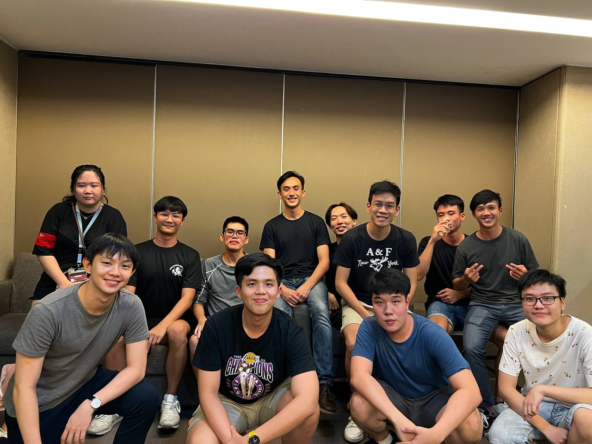

About Me
Hello, I'm Lucas Toh from the Singapore University of Design and Technology. Here's what I do in school.
I intend to major in Design and Artificial Intelligence and recently finished my first year of university.

I’m part of the SUTD Technology Entrepeneurship Programme.

I’m a project lead in SOAR, giving soft robotics a go with both seniors and juniors.